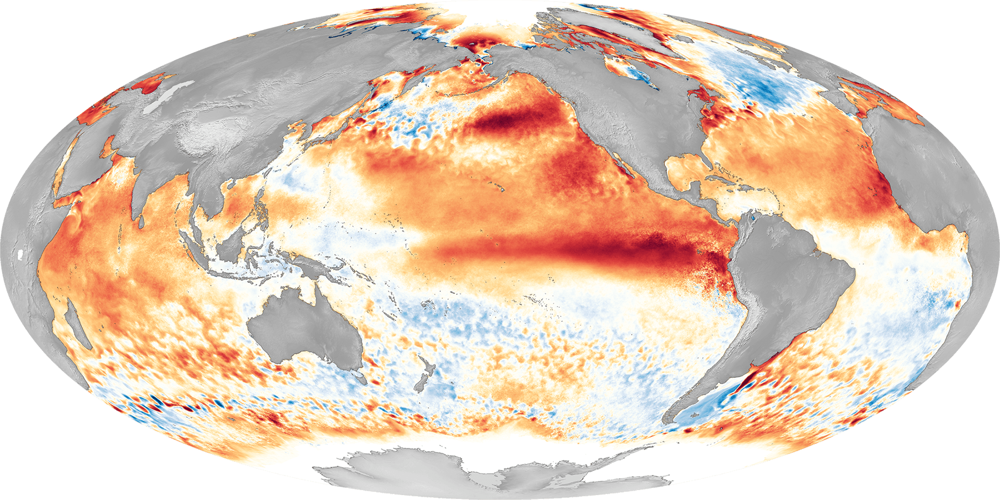
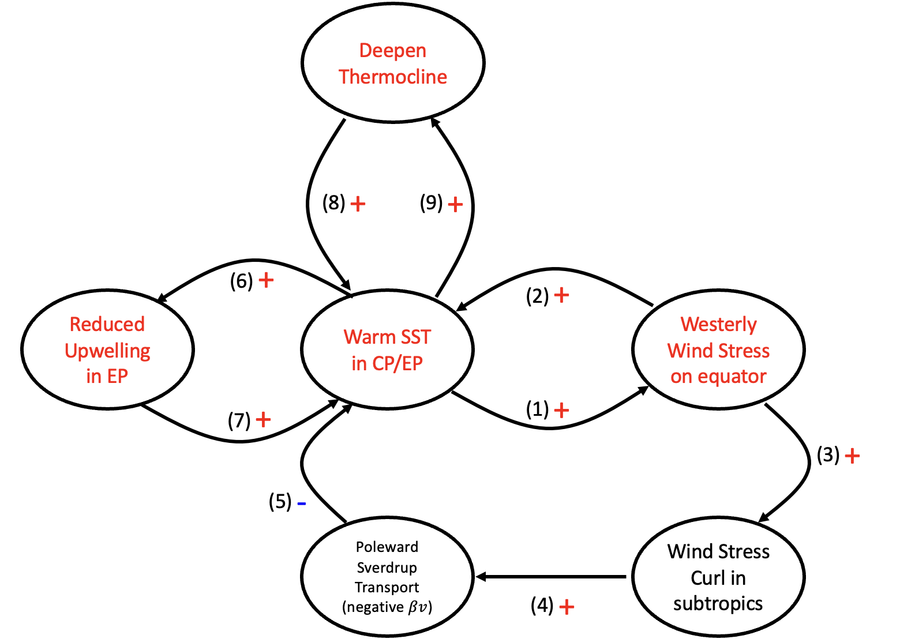
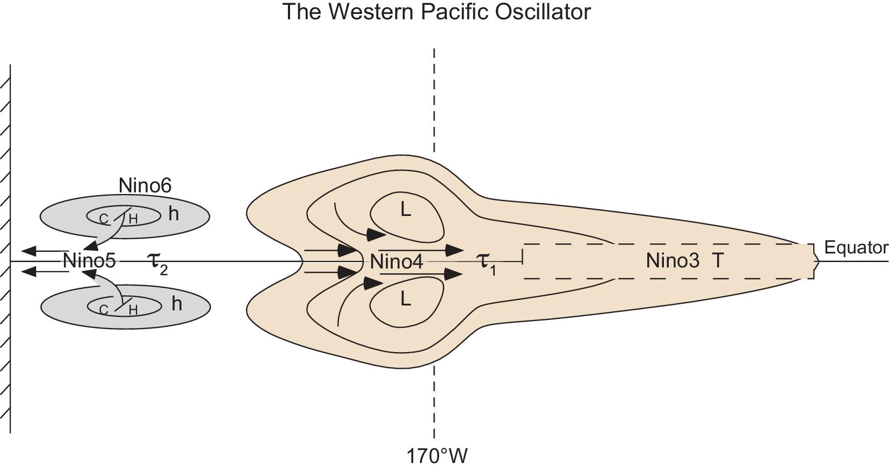

Week 10: El Ni~no Southern Oscillation
Contents
Week 10: El Ni~no Southern Oscillation¶
The El Nino Southern Oscillation (ENSO) is one of the most important variability on seasonal to interannual time scales. It has profound global influence and even influences across timescales. For example, the spring tornado frequency over the continental US, the North Western subtropical high variability, tropical cyclone frequency, and global warming patterns are all shaped by ENSO. These are only a few. ENSO is characterized by 2-7 years, making it highly predictable on seasonal timescales. Given its global impact and long predictability, successfully modeling ENSO has been one of the Holy Grails of the climate community.
{kind=link}

Fig. 29 The 2016 El Nino events from. Credits: NOAA_PSL.¶
Background¶
The earliest record of El Nino Southern oscillation was by a sailor in Peru back in 1892, long before its theory was developed. It wasn’t until 1969, that Jacob Bjerknes proposed a conceptual model for positive feedback in tropical air-sea interaction. The ENSO theory is more completed when Drs. Mark Cane and Stephan Zebiak proposed a series of modeling frameworks, which incorporates (1) atmosphere, (2) ocean mixed layer, and (3) thermocline. Building on their prototype ENSO model, two schools of theory were proposed to explain the observed variability: (1) Delayed oscillation by Dr. David Battisti, and (2) Recharge-discharge oscillator by Dr. Fei-Fei Jin.
Recharge-Discharge Mechanism¶
We will go through some fundamental processes consisting of ENSO. It is summarized in the diagram below.
{kind=link}

Fig. 30 The (known) feedback processes in ENSO.¶
(1)+(2) is the well-known Bjerknes feedback. When the central or eastern Pacific is characterized by warm SST (where is climatologically cold), it will favor the development of convection over that region, i.e., weakened Walker circulation. The enhanced westerly will advect warm water from the western Pacific to the eastern Pacific.
(3)+(4)+(5) is the negative feedback through subtropical cells. When the enhanced westerly happens over the equatorial surface, it increases cyclonic wind stress curl at the subtropical regions. To balance the reduced relative vorticity, a poleward geostrophic current brings negative planetary vorticity to this region. Such geostrophic currents also bring warm water to high latitudes and shallow the equatorial thermocline. An opposite process happens during the La Nina year.
Note
Sverdrup balance was first used to explain the existence of Western Boundary current. It was then modified by Dr. Biran Hoskins to explain the extension of subtropical high and monsoon gyre. (See Hoskins and Rodwell). Dr. Fei-Fei Jin was working with Dr. Brian Hoskins
(6)+(7) The enhanced westerly during the El Nino year also suppresses the equatorial upwelling by Ekman pumping. (i.e., Ekman feedback)
(8)+(9) On the other hand, the deepened thermocline also makes it harder to bring cold water below the thermocline (i.e., thermocline feedback).
Considering all of these processes as a whole is the well-known recharge-discharge oscillator by Jin (1997). One should notice, that the existence of oscillation should involve at least one negative feedback. The diagram above also indicates that the entire process can be reduced to a two-variable system, where SST and thermocline depth are only predictors. The atmospheric-related processes are in a steady state due to their transient timescales compared to ocean processes. Thus, the entire system can be formulated as follows:
Details of each term will be provided in the final project.
Delayed Oscillator¶
Originally formulated by McCreary (1983) and modified by Dr. David Battisti, the Delayed Oscillator perceives ENSO evolutions from a transient perspective. In the Sverdrup Balance, the existence of meridional geostrophic flow balances the anomalous vorticity by wind stress. On transient timescales, many oceanic waves complete such planetary vorticity advection by zonal mean geostrophic flow. For example, during the propagation of a Rossby wave, it continuously exchanges angular momentum and warm water volume across latitudes. Thus, the Sverdrup balance can also be explained through the waves’ lens.
The delayed oscillator can be summarized in the following figure.
{kind=link}

Fig. 31 The western Pacific oscillator in the Delayed oscillator. From Wang (2018): A review of ENSO theories.¶
and the corresponding equation
Where, T, h, \(\tau_1\) and \(\tau_2\) are illustrated in :numerf:`FIG10-3`
We first start with equatorial easterly. The equatorial easterly (\(\tau_1\)) at Nino 4 driven by tropical convection (like MJO) will drive downwelling Kelvin wave (warm anomaly) which further propagates eastward to increase Nino 3 temperature. This is represented in the first term of equation 1.